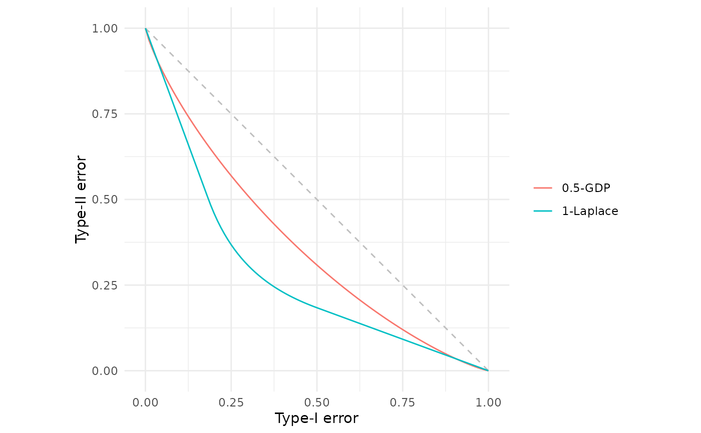
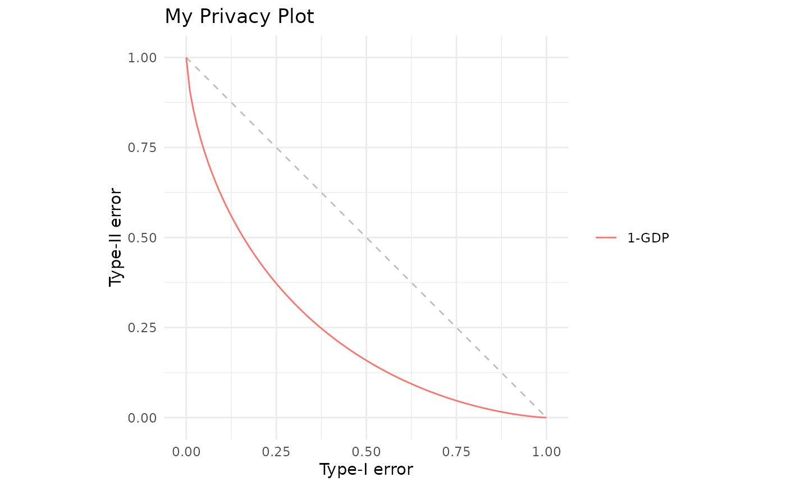
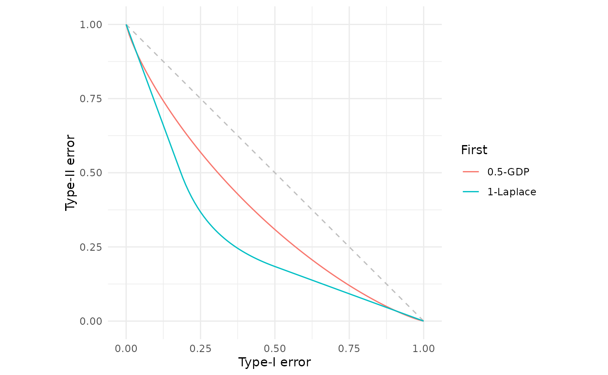
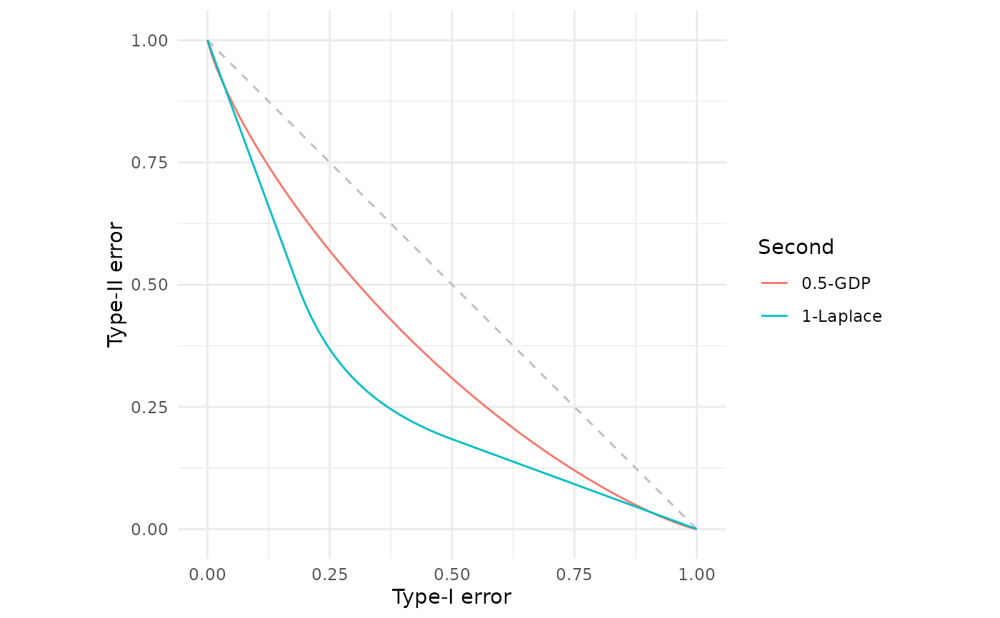

Allows combining multiple fdp() plot objects using the + operator.
Arguments
- e1
An
fdp_plotobject (the result of callingfdp())- e2
Either another
fdp_plotobject or aggplot2layer
Value
If e2 is an fdp_plot, returns a new combined fdp_plot object.
If e2 is a ggplot2 layer, returns a modified ggplot2 object.
Examples
# Combine two separate fdp() calls
fdp(gdp(0.5)) + fdp(lap(1))

# Can still add regular ggplot2 layers
fdp(gdp(1)) + ggplot2::ggtitle("My Privacy Plot")

# First legend naming takes precedence
fdp(gdp(0.5), .legend = "First") + fdp(lap(1), .legend = "Second")

# Later .legend arguments apply if none specified in prior calls
fdp(gdp(0.5)) + fdp(lap(1), .legend = "Second")
